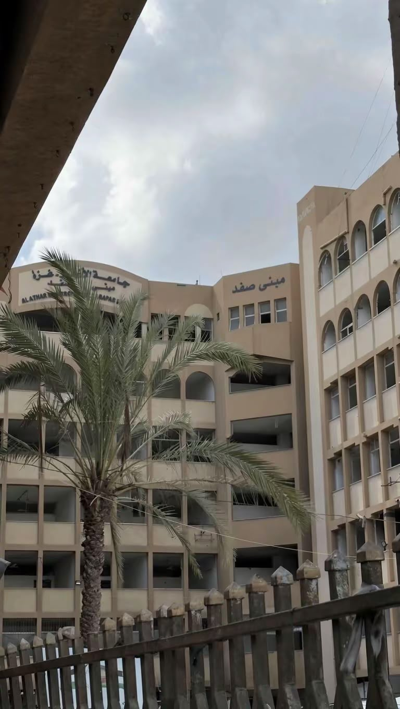

Computer systems
Computer Systems focuses on computer hardware and software, exploring how they work together to build efficient
systems. Students study programming, digital electronics, computer architecture, operating systems, networks,
and embedded systems. Graduates can pursue careers in systems development, networking, technical support, and
smart device programming.

Advantages of Studying Computer Systems:
-
Hardware and Software Knowledge:
Learn how computer components and programs work together.
-
Diverse Career Paths:
Explore programming, networking, embedded systems, and technical support
-
Practical Projects:
Build smart devices and electronic control systems.
-
Deep Technical Understanding:
Understand processors, memory, operating systems, and software.
-
Foundation for Specialization:
Prepare for further study in the Internet of Things (IoT), robotics,
and systems security.